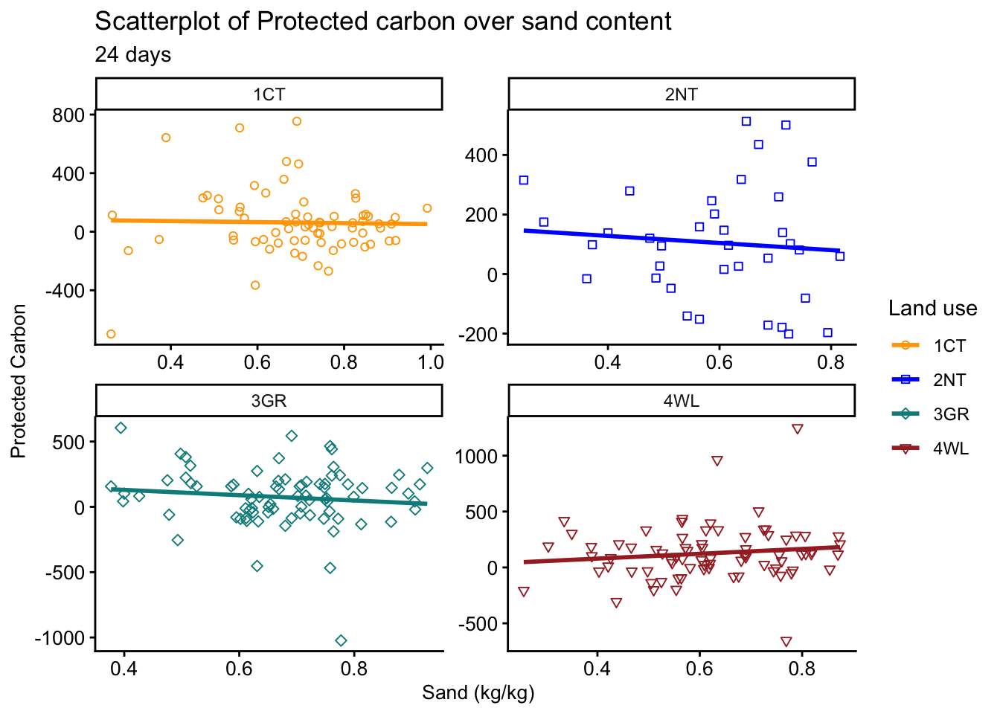
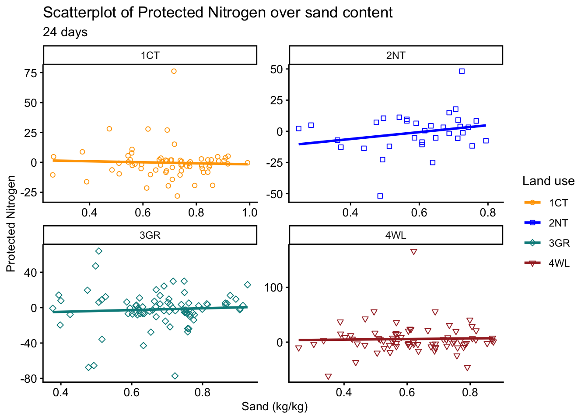

| Land_use | variable | n | mean | SD | P5 | P95 |
|---|---|---|---|---|---|---|
| Conventional tillage | STBA intact | 71 | 148 | 84 | 45 | 311 |
| No-till | STBA intact | 36 | 279 | 129 | 129 | 483 |
| Grassland | STBA intact | 82 | 395 | 169 | 145 | 688 |
| Woodland | STBA intact | 78 | 321 | 205 | 75 | 703 |
| Conventional tillage | STBA crushed | 72 | 184 | 99 | 68 | 381 |
| No-till | STBA crushed | 36 | 315 | 129 | 146 | 563 |
| Grassland | STBA crushed | 80 | 442 | 182 | 158 | 731 |
| Woodland | STBA crushed | 78 | 332 | 213 | 58 | 695 |
| Conventional tillage | BSR intact | 71 | 332 | 198 | 102 | 649 |
| No-till | BSR intact | 36 | 519 | 178 | 254 | 805 |
| Grassland | BSR intact | 82 | 688 | 241 | 269 | 1056 |
| Woodland | BSR intact | 78 | 749 | 297 | 253 | 1169 |
| Conventional tillage | BSR crushed | 72 | 359 | 229 | 112 | 759 |
| No-till | BSR crushed | 36 | 588 | 216 | 261 | 1011 |
| Grassland | BSR crushed | 82 | 722 | 224 | 369 | 1077 |
| Woodland | BSR crushed | 78 | 864 | 322 | 403 | 1319 |
| Conventional tillage | CMIN intact | 70 | 482 | 268 | 163 | 991 |
| No-till | CMIN intact | 36 | 798 | 293 | 395 | 1284 |
| Grassland | CMIN intact | 82 | 1084 | 396 | 460 | 1715 |
| Woodland | CMIN intact | 78 | 1069 | 463 | 377 | 1832 |
| Conventional tillage | CMIN crushed | 72 | 543 | 312 | 170 | 1117 |
| No-till | CMIN crushed | 36 | 903 | 326 | 431 | 1486 |
| Grassland | CMIN crushed | 80 | 1170 | 392 | 567 | 1831 |
| Woodland | CMIN crushed | 78 | 1196 | 472 | 528 | 2036 |
| Conventional tillage | Protected carbon (0-3 days) | 71 | 37 | 57 | -51 | 146 |
| No-till | Protected carbon (0-3 days) | 36 | 36 | 64 | -69 | 116 |
| Grassland | Protected carbon (0-3 days) | 80 | 43 | 111 | -82 | 183 |
| Woodland | Protected carbon (0-3 days) | 78 | 11 | 91 | -99 | 200 |
| Conventional tillage | Protected carbon C (24 days) | 70 | 62 | 223 | -204 | 472 |
| No-till | Protected carbon C (24 days) | 36 | 105 | 191 | -183 | 452 |
| Grassland | Protected carbon C (24 days) | 80 | 74 | 226 | -191 | 408 |
| Woodland | Protected carbon C (24 days) | 78 | 127 | 247 | -197 | 421 |
| Conventional tillage | Net N mineralization intact | 67 | 28 | 22 | 4 | 66 |
| No-till | Net N mineralization intact | 34 | 67 | 42 | 24 | 133 |
| Grassland | Net N mineralization intact | 81 | 90 | 52 | 21 | 194 |
| Woodland | Net N mineralization intact | 76 | 77 | 53 | 16 | 173 |
| Conventional tillage | Net N mineralization crushed | 66 | 27 | 27 | 3 | 87 |
| No-till | Net N mineralization crushed | 34 | 66 | 41 | 27 | 140 |
| Grassland | Net N mineralization crushed | 81 | 88 | 52 | 22 | 179 |
| Woodland | Net N mineralization crushed | 75 | 83 | 55 | 14 | 181 |
| Conventional tillage | Protected nitrogen (24 days) | 66 | 0 | 14 | -19 | 24 |
| No-till | Protected nitrogen (24 days) | 34 | -1 | 16 | -24 | 16 |
| Grassland | Protected nitrogen (24 days) | 81 | -2 | 21 | -36 | 26 |
| Woodland | Protected nitrogen (24 days) | 75 | 6 | 27 | -21 | 41 |
Final Project BIOL 806
Final Project
Abstract
Soil aggregation is a crucial phenomenon essential for maintaining soil health, as it improves soil’s physical structure, provides resistance to erosion, and facilitates nutrient retention. In this context, water-stable macroaggregates (>0.25 mm) are important because of their capacity to store and stabilize soil organic carbon and nitrogen within them. However, even though previous studies have highlighted the potential macroaggregates-protected organic matter, its magnitude and variation among land uses and physiographic regions in North Carolina are poorly understood. This study investigated the soil carbon (C) and nitrogen (N) content of water-stable macroaggregates across four major physiographic regions of North Carolina: Southern Blue Ridge, Southern Piedmont, Southern Coastal Plain, and Atlantic Flatwoods. The soil samples were collected from 21 research stations across four land uses, two from cropland management systems (conventional and no-till) and two from conservation management systems (grassland and woodland). To assess the influence of physiography and land use on C and N mineralization, water-stable macroaggregates were incubated for 24 days at 25°C with 50% water-filled pore space. Physical protection of C and N within macroaggregates was measured as the differences in C and N mineralization between crushed and intact macroaggregates. Crushing was done to expose protected C and N to enhanced mineralization. Water-stable macroaggregates were enriched in both total and mineralizable C and N fractions relative to the whole soil. While land use influenced C and N mineralization, physiography did not have a significant impact. Carbon mineralization was greater in crushed macroaggregates when compared to intact macroaggregates (p<0.001), indicating the release of physically protected soil organic C from water-stable macroaggregates. Overall, this study highlighted the role of water-stable macroaggregates in protecting of mineralizable carbon. Water-stable macroaggregates are an integral component of soil organic carbon and nitrogen storage and critical for mitigating the effects of changing climate.
Introduction
Soil is the largest terrestrial reservoir for carbon, storing approximately 2344 Pg carbon within the top 3 meters of the profile (Jobbágy and Jackson 2000). However, if managed poorly, soil may shift from being a carbon sink to becoming a source of greenhouse gases. To mitigate this risk, soil aggregates play a vital role because a substantial portion of organic matter is stored within them. For instance, (Ding et al. 2021a)found that 75-84% of soil organic carbon and 67-81% of total nitrogen were stored in aggregates. Soil aggregation is a dynamic process developed through complex interactions between abiotic and biotic factors over time, which, in turn, influences numerous biological, physical, and chemical properties of soil (Garland et al. 2024)). Soil aggregates provide habitat to microbes, protect them against predation, and influence their activities (Rillig, Muller, and Lehmann 2017). The interaction of physical and chemical properties of soil with biological communities present in them contribute to multiple functions of ecosystems, such as root growth, nutrient cycling, carbon dynamics, soil aeration, soil water infiltration, and purification, along with providing resistance against wind and water erosion (Sullivan et al. 2022). Moreover, aggregation also mitigates soil compaction (Abdelrhman et al. 2025) and affects evapotranspiration to help in irrigation calculations (Gliński et al., 2011). In this context, aggregates become crucial for maintaining soil health and mitigating changing climate.
macroaggregates (>0.25 mm) generally contain greater carbon concentrations than microaggregates (0.25 mm-0.053 mm) due to involvement of transient organic binding agents in the formation (citation). In addition to varying carbon concentration, nature organic matter also varies with aggregates. The organic matter in macroaggregates tend to be more labile and less processed when compared to microaggregates, which are less labile due to their physical protection and chemically recalcitrant nature of microbe-mineral bonds and organo-mineral complexes present in it (Elliott 1986). As a result, the turnover time of soil organic carbon in macroaggregates is smaller (44 ± 18 years) than the microaggregates (209 ± 95 years) (Lal 2005). This difference is likely possible based on size of both types of aggregates as macroaggregates (>0.25 mm) are less stable and disintegrate into smaller microaggregates resulting faster turnover of it. The smaller turnover rate and labile nature of organic carbon, highlights the importance of studying macroaggregates. For instance, (Kan et al. 2020), compared different tillage practices (no-till with straw, rotatory tillage with straw, conventional till with straw, and conventional tillage without straw), and reported that irrespective of tillage practice, larger macroaggregates (>2 mm) consistently had the highest proportion of soil organic carbon stock, followed by smaller macroaggregates (0.25-2 mm) and then microaggregates. These findings emphasis macroaggregates for being critical for in soil carbon storage and its dynamics.
Land use affects carbon and aggregate stabilization; therefore, it is essential to understand them for developing better management practices. Croplands have the highest potential to sequester carbon when compared to grasslands and forests (Chen et al. 2019). This is because croplands, which are usually the most disturbed system have been depleted of so much carbon that they have a larger deficit to overcome to meet potential, as compared with grasslands and woodlands that may already be at maximum potential. Therefore, improving aggregate stability in cropland systems becomes essential. Additionally, disruptive agricultural practices can lead to the breakage of fungal hyphae and adversely affect macroaggregates formation (Beare, Hendrix, and Coleman 1994); and elimination of tillage significantly promotes the abundance of arbuscular mycorrhizal fungi in aggregates(Helgason, Walley, and Germida 2010). These mycorrhizal fungi produce glomalin-related soil protein, which is a glue that contributes to soil aggregation. Glomalin is strongly correlated with soil aggregation in transitioning of management practice from conventional tillage to no-till (Wright, Starr, and Paltineanu 1999). The correlation was especially high with water-stable aggregates of 1-2 mm size (Wright and Upadhyaya 1998). According to (Six, Elliott, and Paustian 2000), an increase in the intensity of cultivation practices accelerates the decomposition of soil organic carbon, leading to disintegration of carbon-rich macroaggregates in soil. However, this process could be reversed when land is restored (Delelegn et al. 2017). Conservation cultivation practices such as no-tillage promote soil cover and reduce physical soil disturbances, which help maintain optimum ecological function by enhancing soil biological activity and limiting erosion (Alan J. Franzluebbers 2022a). No-tillage reduces the contact between surface litter and soil microbes, resulting in slower decomposition rate than with conventional tillage. Undisturbed soil provides a habitat where soil flora and fauna can flourish and promote aggregate formation.
Well-managed grassland may be one of the best land management strategies to store soil carbon and nitrogen, as perennial grass and legume pastures enhance soil organic matter in surface soil. It is the best way to reinstate long-term productivity of agricultural soil. Due to their year-round productivity and dense root systems, perennial grasslands benefit soil aggregation, particularly in comparison with cultivated croplands (Franzluebbers, 2012). However, intensively managed grasslands with high stocking rate, chemical input, and farm machinery can lead to soil compaction, which limits soil aggregation processes. Franzluebbers (2000) reported that in Southern Piedmont of Georgia, soil aggregate stability and mean-weight diameter (MWD) were greater under long-term pasture management than under conservation tillage and woodland.
Woodland is globally recognized as a conservation land use to overcome the negative influences of land degradation. The forest system has greater retention of organic matter and litter and less fluctuation of soil moisture and temperature under the canopy cover to help maintain aggregate stability. In the forest ecosystem, depending on plant species, mycorrhizal fungi increase soil aggregation through fungal enmeshment and secreting glomalin-related soil protein. According to(Cerdà 1998) grassland may be a better option to restore land quickly after land disturbance such as fire or cultivation, however, in the long term woodland vegetation provides greater aggregate stability.
Soil texture plays a critical role in aggregate formation and stability through the influence of fine soil particles such as clay and silt. It has a strong association with dry-stable aggregates compared to water-stable aggregates. To quantify the influence of soil texture, the sand fraction acts as the single-most effective component associated with soil organic carbon and nitrogen because clay and silt particles tend to behave more similarly and the effect of sand is a simple inverse of clay and silt (Franzluebbers, 2024). (Ding et al. 2021b) reported in a 27-year-old long-term experiment, with increasing sand content, macroaggregates concentration decreased which led to negative influence on soil organic carbon and nitrogen. They found a similar trend for microaggregates which led to the conclusion that finer texture supported higher mass percentage and stability when compared to coarser textures.
There has been no study which has measured the protected carbon and nitrogen within macroaggregates in North Carolina. Such study is important in North Carolina’s hot and humid climate, which also gets intense rainfall and a history of intensive cultivation practices which led to soil erosion is detrimental to soil aggregation and health. Therefore, to understand this physical protection, a study was conducted by comparing crushed with intact water stable macroaggregates in North Carolina.
Our hypothesis was that water stable macroaggregates (0.25-4.75 mm) protect carbon and nitrogen within it and this protection can vary across different land uses. We hypothesized that the protected carbon and nitrogen would increase with increasing conservation gradient form conventional till to no-till, grassland, and the most conserved woodland. Additionally, we hypothesized that changing physiography would also influenced protected carbon and nitrogen due to varying soil texture across different regions. This is because the increasing sand content negatively associated with aggregation (Alan J. Franzluebbers 2022b) which can be negatively related with protected carbon and nitrogen.
Method
2.1 Site Selection
Soil samples were collected from 268 fields in 21 research stations across North Carolina from December 2020 to February 2021. These research stations were located in four major land resource areas (MLRA): Atlantic Flatwood (n = 16), Southern Piedmont (n = 100), Southern Blue Ridge (n = 40), and Southern Coastal Plain (n= 112). They operated under the joint management of North Carolina State University and the North Carolina Department of Agriculture and Consumer Services. Four long-term land uses of conventional-till cropland (n = 72), no-till cropland (n = 36), grassland (n = 82), and woodland (n = 78) were sought at every research station. When all four land uses were not present, then at least two contrasting land uses were sampled. Four separate fields were sampled under each land use within a research station. An exception was under woodland where whole blocks of a single stand were sometimes subsampled with sampling locations separated by at least 30 m from each other.
2.2 Soil Sampling
Soil samples were collected at 0-10 cm depth from each field using a 4 cm inside diameter push probe. Soil aggregation is a surface phenomenon that decreases with depth (A. J. Franzluebbers and Arshad 1997), this study focused on the of 0-10 cm depth of soil only. Five soil cores were composited at each sampling site: one from the center and the remaining four samples 10 m away, cardinally from the center. The representative sampling locations were tagged with the GPS coordinates for soil taxonomical information from SoilWeb (California Soil Resource Lab 2022). Before sampling, the surface residue and any living plant material to height of 5 cm aboveground was removed from a 30 cm inside diameter ring at all of the soil coring locations.
2.3 Soil Processing
The composited soil samples were transferred into labeled paper bags and later dried at 55 in the oven for 3 days until their weight became constant. Soil samples were then sieved through the 4.75 mm opening screen by gently crushing them with a pestle. Any coarse fragments, such as stones and plant residues were removed. The sieve selection deviated from typical 2 mm openings to balance homogeneity and suitable aggregate sizes for stability and aeration during incubation. This was done to prevent undesirable disturbance from fine sieving that can have a large impact on biological activity of soil (Franzluebbers, 1999).
The fractions of soil aggregates were determined using a standardized procedure in the Soil Ecology and Management lab (Franzluebbers, 2022). Different-sized dry-stable aggregates were collected by placing soil samples on top of the 20 cm diameter nest of sieves with mesh sizes of 1.0, 0.25, and 0.053 mm. Then, the sieves were shaken using a CSC Scientific sieve shaker (Catalog no. 18480, CSC Scientific Company). Soils that remained on each sieve and passed through the 0.053 mm screen were weighed for their respective size classes. All aggregate classes were added together for subsequent determination of water-stable aggregation. Wet sieving was performed using a nest of screens, mechanically raised and lowered in a constant volume of water, extracting different-sized aggregates from the soil samples (Yoder, 1936). Soil previously used for dry-stable aggregation was placed on top of the nest of sieves, which were 15 cm in diameter with mesh sizes of 1.0 mm and 0.25 mm. The nest of sieves was immersed directly in water and oscillated for 10 minutes with a 20-mm stroke length at 30 cycles min-1.Both sieves remained fully immersed in water throughout the oscillation. At the end of 10 minutes, both sieves were removed and placed in an oven at 55 overnight. Water containing the soil fraction passing through the 0.25 mm screen was poured over a 0.053 mm screen separately and gently washed with a stream of water. The microaggregate fraction retained on the sieve was transferred to a plastic boat for drying. Silt-clay fraction (<0.053 mm) was calculated as the difference between the initial soil mass and the sum of all collected aggregate fractions.
Soil-test biological activity was determined by measuring the “flush of CO2” according to the standard method described by (Franzluebbers, 2020). For this study, a constant volume of intact water-stable macroaggregates was scooped out of the envelope using a 20-mL scoop and transferred into a 60-mL glass bottle. Some samples were limited in amount; therefore, a 10-mL scoop was used. The remaining macroaggregates were milled for 1 minute in a ball mill and same scoop was used to take out crushed macroaggregates and transferred into another 60-mL glass bottle. Both crushed and intact aggregates were wetted with deionized water to 50% water-filled pore space. The glass bottle containing rewetted soil was placed into a 1-L mason jar along with a 30-mL Nalgene bottle containing 5-mL of 0.5 mol L-1 NaOH to trap CO2 and a 10-mL vial containing water to maintain humidity. The mason jar was sealed and incubated for 24 days at 25 . Alkali traps were replaced on the 3rd day of incubation and removed traps were sealed air-tight until the titration process began. Each NaOH trap was titrated against 0.5 M of HCl until the end point of the phenolphthalein color indicator was achieved after putting 1.5 M BaCl2 solution, which was precipitated as BaCO3. A magnetic bar was placed in the alkali trap, and acid was added drop by drop while vigorously stirring it the magnetic plate until the pink color changed into a colorless solution (pH~9.3). After every 10 samples, a blank alkali trap that was kept in the mason jar without any soil sample was titrated.
The carbon mineralized during the first three days following rewetting of dried soil was called soil-test biological activity (STBA). The carbon mineralized between 3 and 24 days was called basal soil respiration (BSR). The sum of carbon mineralized over these two periods was called cumulative carbon mineralization (CMIN). Protected soil carbon was determined as the difference between the carbon mineralization of intact macroaggregates and the mineralized carbon in crushed macroaggregates over each respective incubation interval.
After incubation, soil samples were removed from the mason jar and placed in an oven for 3 days at 55 . After drying, they were sieved through a 2 mm screen and transferred into a labeled coin envelope. Inorganic nitrogen (NH4+ and NO3-) was measured for water-stable macroaggregates prior to incubation (day 0) and at the end of incubation (day 24) for crushed and intact aggregates. An aliquot of 10 g (± 0.02) was weighed into a 30-mL Nalgene bottle and 20 mL of 2 M KCl solution was added to the bottle and shaken (6000-00 Shaker) for 30 minutes at a high-speed setting. After every 60 samples, two blanks without soil and one standard soil of 5 g of sample with 20 ml KCl solution were also analyzed. Solutions were extracted through Whatman No. 5 filter paper and stored in the freezer at -20 until these extracts were analyzed through an autoanalyzer.
Net nitrogen mineralization (mg kg-1 24 d-1) was calculated by the difference in inorganic nitrogen between Day 0 and Day 24 of incubation. The measurement of inorganic nitrogen used colorimetric techniques, with salicylate nitroprusside used for NH4+-N and hydrazine reagent used for NO3--N in a segmented flow analyzer (Bran-Luebbe AutoAnalyzer 3 (EPA Method 353.1) (Franzluebbers et al., 2021). Protected inorganic nitrogen inside the aggregates were calculated as the difference between the net inorganic nitrogen of crushed aggregates and intact aggregates.
Sand content of whole soil was determined according to standard method determined by ((Franzluebbers, 2022). Soil samples were scooped out using a 59-mL scoop and transferred into 125-mLNalgen bottle and weighed. Then a 100 mL of 0.1 M tetrasodium pyrophosphate (Na4P207) was dispensed and shaken (6000-00 Shaker) for 12-16 tbl-Variable-Summaryhours at a low-speed setting. Subsequently, the soil solution was transferred to a 1-L volumetric cylinder and brought to volume using deionized water. After plunging the solution 10 times, the soil solution was allowed to settle for 5 hours and sieved through 0.053-mm opening sieve.
2.4 Statistical Analysis
Statistical summary of soil was calculated using R version 4.4.2 (R Core Team 2024), which included mean, median, and interquartile and 5-95% range (Table 1). Correlation between variables is considered significant at p<0.05. ANCOVA was conducted on SAS version 9.4 (SAS Institute, Cary, NC) where land use was main effect and sand content was continuous covariate declared significant at p<0.05. T-test was conducted across land uses for to determine the significant protection carbon (3 and 24 days) and nitrogen (24 days).
The following model was used:
\[ \hat{y}=\beta_0 + \beta_{Landuse} + \beta_{Sand} + \beta_{Landuse*Sand} \]
Where Y was response variable for different soil properties measure. Land use included four levels of each land management practice and sand content was continous variable that varied across land uses.
Result
3.1 Carbon mineralization across the land uses
Carbon mineralization was measured for both intact and crushed types of macroaggregates across the land uses. A general linear model was conducted across land use, which showed that soil-test biological activity of intact (R2= 51%) and crushed (R2= 49%) macroaggregates was significantly influenced by land use, sand, and their interaction. The order of the soil-test biological activity was grassland > woodland = no-till > conventional till in both types of macroaggregates. Cumulative carbon mineraliazation was also significantly influenced by land use, sand content, and their interaction, both in intact (R2 = 57%) and crushed macroaggregates (R2 = 56%). The order of cumulative mineralization was woodland = grassland > no-till > conventional tillage in both types of macroaggregates. The changing order of mineralization for woodland and grassland for each duration suggests that there was slow mineralization in woodland compared to grassland at the beginning of the incubation, which might be due to the nature of the organic matter present in the woodland. Unlike carbon mineralization, protected carbon had no such influence of explanatory variables.
3.2 Nitrogen mineralization across the land uses
Net nitrogen mineralization of intact and crushed macroaggregates, which is the difference of available nitrogen before incubation (0 days) and after incubation (24 days), had a significant effect of land use, sand content, and interaction. The order of net nitrogen mineralization in intact macroaggregates was grassland > woodland = no-till > conventional tillage, and in crushed macroaggregates was grassland = woodland > no-till = conventional till. Similar to the protected carbon, protected nitrogen was not influenced by any factors.
3.3 Protected carbon and nitrogen across the locations
The above sections mentioned about the protection of carbon and nitrogen across the land uses. In this section, we tried to investigate the effect of research location on the protection carbon and nitrogen. General linear model was conducted to test if protected carbon and nitrogen were significant within each of the research locations. The mean values of protected carbon for 3 days across the 21 locations vary from -8 to 70 mg kg 3 d-1, and 20 locations had positive values for protection except one location, Umstead Research Farm in Southern Piedmont Major Land Resource Area had negative value. A t-test was conducted to check if protected carbon was significant different from zero, and 6 locations had significant protected carbon for the first 3 days. Similar test for protected carbon for 24 days showed that the mean value for protection varies from -16 to 271 mg kg 24 d-1, and 19 locations had positive values for protected carbon. Only two locations, Currin Farm in the Southern Piedmont Major Land Resource Area and Mountain Research Station in the Southern Blue Major Land Resource Area, had a negative value for protected carbon and 7 locations had protected carbon significantly greater than 0.
Unlike protected carbon, in the case of protected nitrogen, the GLM mean values varied from – 11 to 17 mg kg-1. A total of 10 locations had negative values, and only 2 of them are significantly different than zero. The negative values of protected nitrogen might be the result of the immobilization of released nitrogen by microbes after crushing macroaggregates.
3.4 Influence of sand gradient on carbon and nitrogen mineralization within each land use
Sand content varied among 268 soil samples collected from 21 research stations. Sand concentration in conventional till (n = 72) was 0.69 \(∓\) 0.2 g kg-1 (mean \(∓\) SD), in no-till (n = 36) was 0.59 \(∓\) 0.1 g kg-1, in grassland (n = 82) was 0.68 \(∓\) 0.1 g kg-1, and in woodland (n = 78) was 0.62 \(∓\) 0.1 g kg-1. Statistical limits of 5-95% were 0.38-0.91 g kg-1 for conventional tillage, 0.34-0.77 g kg-1 for no-till, 0.43-0.89 g kg-1 for grassland, and 0.38–0.82 g kg-1 for woodland.
| variable | 1CT | 2NT | 3GR | 4WL |
|---|---|---|---|---|
| STBA intact | -0.58*** | -0.43** | -0.61*** | -0.59*** |
| STBA crushed | -0.56*** | -0.41* | -0.61*** | -0.53*** |
| CMIN intact | -0.64*** | -0.41* | -0.62*** | -0.61*** |
| CMIN crushed | -0.55*** | -0.42** | -0.68*** | -0.53*** |
| Net N mineralization crushed | -0.4*** | -0.37* | -0.64*** | -0.58*** |
| Net N mineralization intact | -0.45*** | -0.45** | -0.66*** | -0.62*** |
The general linear model declared that sand had a significant influence on carbon (Figure 1, Figure 2) and nitrogen mineralization (Figure 3), but not on the protection of each. Soil-test biological activity (STBA) is significantly influenced by sand content in both intact and crushed macroaggregates. A similar effect was observed in cumulative carbon mineralization and net nitrogen mineralization in both types of aggregates. The influence was negative and moderate in all the land use (Table 2). Correlation in both carbon and nitrogen mineralization was stronger in grasslands and a little weaker in no-till land use.



Discussion
The high carbon and nitrogen mineralization in grassland and woodland was possible due to higher organic matter present in these land uses when compared to croplands. Also, grassland get organic input through root through the year and are undisturbed expect in cased of pastures which had animal grazing, also their manure also contribute to the increasing the amount of organic matter and results to higher aggreagtion. Woodlands get litter input and are the least disturbed land use until they are ready to cut down for commercial purpose. These two factors helps woodlands to have more of the aggregation. No-till cropland had carbon mineralization of similar magnitude to woodland because in this study no-till cropland has a lot of organic matter input and less disturbance as a part of management practice. Conventional tillage being the most disturbed and least organic input getting system which might be the reason of least carbon mineralization.
Increasing sand content had negative impact on all the soil properties. This might be because the sand are inert particles and in general they do not participate in aggregate formation which might be the reason of this inverse relation.
Conclusion
This study suggest that the effect of land use is more than the inherent effect of topography and soil texture. Also, conservation land management such as grasslands and woodlands promotes the soil structure and aggregation. Agricuture being the most exhaustive system integration of conservation practices might also beneficial aggregation.
References
Abdelrhman, Ahmed Ali, Yasser A. Sayed, Mohamed E. Fadl, Cristiano Casucci, Marios Drosos, Antonio Scopa, and Hussein Moftah. 2025. “Impact of Aggregate-Associated Carbon on Soil Mechanical Properties: Stability and Compaction Indices in Pomegranate Orchards of Different Ages.” Soil Systems 9 (1): 20. https://doi.org/10.3390/soilsystems9010020.
Beare, M. H., P. F. Hendrix, and D. C. Coleman. 1994. “Water-Stable Aggregates and Organic Matter Fractions in Conventional- and No-Tillage Soils.” Soil Science Society of America Journal 58 (3): 777–86. https://doi.org/10.2136/sssaj1994.03615995005800030020x.
Cerdà, A. 1998. “Soil Aggregate Stability Under Different Mediterranean Vegetation Types.” CATENA 32 (2): 73–86. https://doi.org/10.1016/S0341-8162(98)00041-1.
Chen, Songchao, Dominique Arrouays, Denis A. Angers, Manuel P. Martin, and Christian Walter. 2019. “Soil Carbon Stocks Under Different Land Uses and the Applicability of the Soil Carbon Saturation Concept.” Soil and Tillage Research 188 (May): 53–58. https://doi.org/10.1016/j.still.2018.11.001.
Delelegn, Yoseph T., Witoon Purahong, Amila Blazevic, Birru Yitaferu, Tesfaye Wubet, Hans Göransson, and Douglas L. Godbold. 2017. “Changes in Land Use Alter Soil Quality and Aggregate Stability in the Highlands of Northern Ethiopia.” Scientific Reports 7 (1): 13602. https://doi.org/10.1038/s41598-017-14128-y.
Ding, S. J., X. F. Zhang, W. L. Yang, X. L. Xin, A. N. Zhu, and S. M. Huang. 2021a. “Soil Nutrients and Aggregate Composition of Four Soils with Contrasting Textures in a Long-Term Experiment.” Eurasian Soil Science 54 (11): 1746–55. https://doi.org/10.1134/S1064229321110041.
———. 2021b. “Soil Nutrients and Aggregate Composition of Four Soils with Contrasting Textures in a Long-Term Experiment.” Eurasian Soil Science 54 (11): 1746–55. https://doi.org/10.1134/S1064229321110041.
Elliott, E. T. 1986. “Aggregate Structure and Carbon, Nitrogen, and Phosphorus in Native and Cultivated Soils.” Soil Science Society of America Journal 50 (3): 627–33. https://doi.org/10.2136/sssaj1986.03615995005000030017x.
Franzluebbers, A. J., and M. A. Arshad. 1997. “Soil Microbial Biomass and Mineralizable Carbon of Water-Stable Aggregates.” Soil Science Society of America Journal 61 (4): 1090–97. https://doi.org/10.2136/sssaj1997.03615995006100040015x.
Franzluebbers, Alan J. 2022a. “Soil-Test Biological Activity Associates with Soil Aggregation Characteristics Under Different Land Uses in North Carolina.” Soil Science Society of America Journal 86 (6): 1639–51. https://doi.org/10.1002/saj2.20474.
———. 2022b. “Soil-Test Biological Activity Associates with Soil Aggregation Characteristics Under Different Land Uses in North Carolina.” Soil Science Society of America Journal 86 (6): 1639–51. https://doi.org/10.1002/saj2.20474.
Garland, Gina, John Koestel, Alice Johannes, Olivier Heller, Sebastian Doetterl, Dani Or, and Thomas Keller. 2024. “Perspectives on the Misconception of Levitating Soil Aggregates.” SOIL 10 (1): 23–31. https://doi.org/10.5194/soil-10-23-2024.
Helgason, B. L., F. L. Walley, and J. J. Germida. 2010. “No-till Soil Management Increases Microbial Biomass and Alters Community Profiles in Soil Aggregates.” Applied Soil Ecology 46 (3): 390–97. https://doi.org/10.1016/j.apsoil.2010.10.002.
Jobbágy, Esteban G., and Robert B. Jackson. 2000. “THE VERTICAL DISTRIBUTION OF SOIL ORGANIC CARBON AND ITS RELATION TO CLIMATE AND VEGETATION.” Ecological Applications 10 (2): 423–36. https://doi.org/10.1890/1051-0761(2000)010[0423:TVDOSO]2.0.CO;2.
Kan, Zheng-Rong, Shou-Tian Ma, Qiu-Yue Liu, Bing-Yang Liu, Ahmad Latif Virk, Jian-Ying Qi, Xin Zhao, Rattan Lal, and Hai-Lin Zhang. 2020. “Carbon Sequestration and Mineralization in Soil Aggregates Under Long-Term Conservation Tillage in the North China Plain.” CATENA 188 (May): 104428. https://doi.org/10.1016/j.catena.2019.104428.
Lal, Rattan. 2005. “Organic Matter Turnover.” In. CRC Press. https://doi.org/10.1201/NOE0849338304.ch252.
R Core Team. 2024. R: A Language and Environment for Statistical Computing. Vienna, Austria: R Foundation for Statistical Computing. https://www.R-project.org/.
Rillig, Matthias C, Ludo A H Muller, and Anika Lehmann. 2017. “Soil Aggregates as Massively Concurrent Evolutionary Incubators.” The ISME Journal 11 (9): 1943–48. https://doi.org/10.1038/ismej.2017.56.
Six, J, E. T Elliott, and K Paustian. 2000. “Soil Macroaggregate Turnover and Microaggregate Formation: A Mechanism for C Sequestration Under No-Tillage Agriculture.” Soil Biology and Biochemistry 32 (14): 2099–2103. https://doi.org/10.1016/S0038-0717(00)00179-6.
Sullivan, P. L., S. A. Billings, D. Hirmas, L. Li, X. Zhang, S. Ziegler, K. Murenbeeld, et al. 2022. “Embracing the Dynamic Nature of Soil Structure: A Paradigm Illuminating the Role of Life in Critical Zones of the Anthropocene.” Earth-Science Reviews 225 (February): 103873. https://doi.org/10.1016/j.earscirev.2021.103873.
Wright, S. F., J. L. Starr, and I. C. Paltineanu. 1999. “Changes in Aggregate Stability and Concentration of Glomalin During Tillage Management Transition.” Soil Science Society of America Journal 63 (6): 1825–29. https://doi.org/10.2136/sssaj1999.6361825x.
Wright, S. F., and A. Upadhyaya. 1998. “A Survey of Soils for Aggregate Stability and Glomalin, a Glycoprotein Produced by Hyphae of Arbuscular Mycorrhizal Fungi.” Plant and Soil 198 (1): 97–107. https://doi.org/10.1023/A:1004347701584.